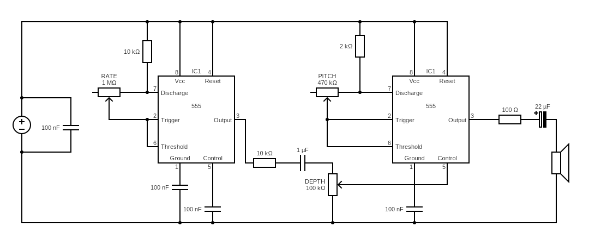

Introduire la modulation en utilisant un second NE555 en astable lent (LFO) qui agit sur le VCO audible.
VCO : oscillateur dans la bande audio.
LFO : oscillateur lent (quelques Hz à dizaines de Hz).
Modulation : variation d'un paramètre du VCO au cours du temps.
Schéma de l'étape 2

Schéma de référence : double NE555 avec LFO de modulation (RATE), réglage de pitch et profondeur (DEPTH), puis sortie audio.
Avant (étape 1)
Potentiomètre manuel → RC du VCO → fréquence fixe à l'instant t
Après (étape 2)
LFO + profondeur de modulation → paramètre du VCO varie dans le temps
Ce que l'élève ajoute
Un second NE555 en astable lent (LFO).
Un potentiomètre pour la vitesse du LFO.
Un potentiomètre pour la profondeur de modulation.
Options de modulation à tester
A) FM simple (option recommandée)
Injecter le signal LFO sur la broche CONTROL (pin 5) du VCO via un réseau résistance/condensateur.
Effet : les seuils internes bougent, la fréquence « flotte » autour de la valeur centrale.
B) Modulation par « pull » du timing
Le LFO modifie la résistance effective du réseau RC du VCO.
Effet : très pédagogique, mais plus sensible aux réglages extrêmes et aux instabilités.
Vibrato vs trémolo
Vibrato : modulation de fréquence (hauteur).
Trémolo : modulation d'amplitude (volume).
Dans cette étape, vous travaillez surtout le vibrato via la fréquence du VCO.
Expériences guidées
LFO lent : effet sirène / balayage.
LFO moyen : vibrato musical.
LFO rapide : textures rugueuses (ring-ish).
Modulation trop forte : perte de stabilité, sauts de fréquence ou saturation de l'effet.
Tableau vitesse LFO → sensation
Vitesse LFO
Sensation perçue
Usage
0,2 à 1 Hz
Très lent, balayage large
Sirène / effet dramatique
2 à 6 Hz
Vibrato naturel
Jeu mélodique simple
7 à 12 Hz
Trille serré
Texture nerveuse
15 Hz et plus
Grain rugueux
Effets expérimentaux
Liste des composants (ajouts étape 2)
1 × NE555 supplémentaire (LFO), en plus du NE555 VCO
1 × potentiomètre RATE : 1 MOhm (vitesse LFO)
1 × potentiomètre DEPTH : 100 kOhm (profondeur de modulation)
1 × potentiomètre PITCH : 470 kOhm (réglage VCO)
1 × résistance 10 kOhm (charge LFO)
1 × résistance 10 kOhm (liaison de modulation)
1 × résistance 2 kOhm (charge VCO)
1 × résistance 100 Ohm (série sortie audio)
1 × condensateur 1 µF (liaison modulation)
Plusieurs condensateurs 100 nF (timing, découplage et pin 5)
1 × condensateur 22 µF (liaison audio)
1 × haut-parleur
Valeurs relevées d'après le schéma fourni pour l'étape 2.
À quoi sert un LFO ?
Un LFO automatise un réglage que vous feriez à la main. Au lieu de tourner le potentiomètre de pitch en continu, le LFO le fait pour vous, avec une vitesse et une profondeur contrôlables.